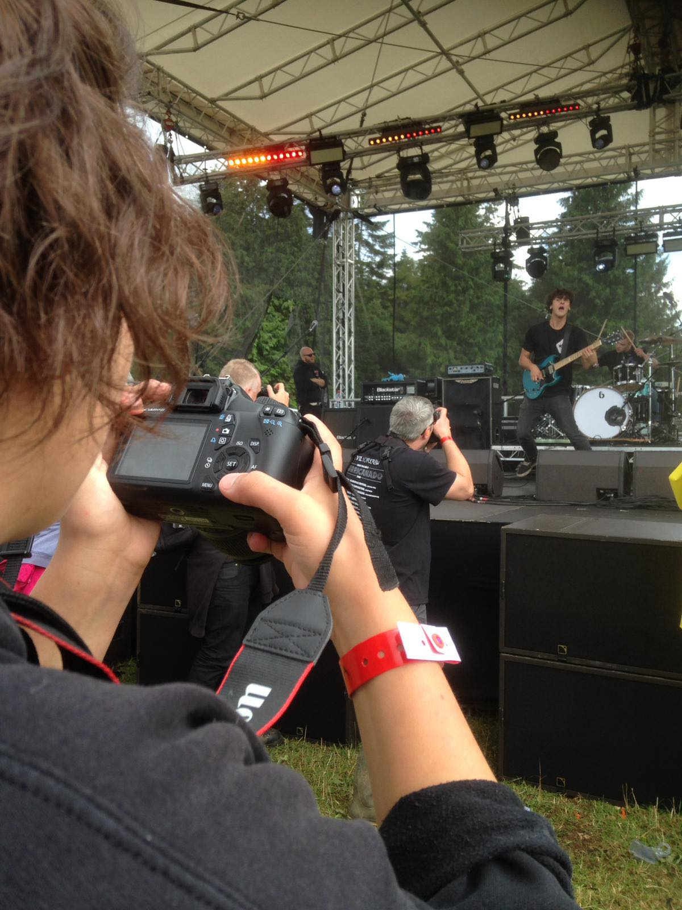

My name is Hannah Gallardo Petchey - I'm 20 years old and based in The Cotswolds however, I study Bsc Media Production at De Montfort University in Leicester. Never in my life have I dreamt of an office Job; getting your hands stuck in with practical tasks and experiencing your work as it's being carried out always seemed like much more fun.
My passion for Media Production started when I joined second year of college. I had had enough with the textbook subjects which were compulsory during school. I wanted to have a go at creating a project and having a physical end result rather than just a grade. Media is something I've always dabbled in, so I thought college would be a great starting place.
I recieved my first Camera for Christmas in 2016 and that helped my Media journey take off. Still to this day I keep the camera - Canon EOS1100D - on my shelf in my bedroom. It's a little reminder that I have developed a lot in the last couple years, even if progress feels slowly currently.
To get in Contact: Instagram: hangallardo / Twitter: hannah_gallardo